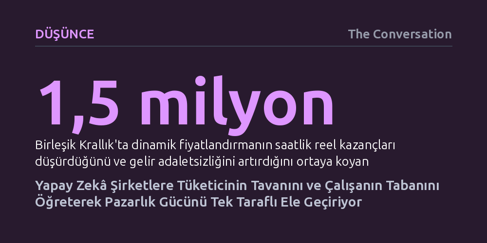

DUSUNCE · The Conversation · 2026-09-07
Yapay zekâ algoritmaları, tüketicinin ödemeye hazır olduğu tavan fiyatı ve çalışanın razı geleceği taban ücreti şirketler lehine tespit edebiliyor. Piyasadaki karşılıklı belirsizliğin tek taraflı kalkması, pazarlık gücünü tamamen platformlara devrediyor.
Bu yazı, kişiselleştirilmiş fiyat ve teşviklerin birer fırsat değil; şirketlerin finansal sınırlarımızı tek taraflı öğrenerek pazarlık gücümüzü elimizden aldığı bir gözetim mekanizması olduğunu gösteriyor.

Geleneksel piyasalarda alıcı ile satıcı ya da işveren ile çalışan arasındaki ilişkide her zaman karşılıklı bir sis perdesi bulunurdu. Bir çalışan normalde saatte 24 dolara razı olabilecekken piyasa rayici 30 dolar olduğu için bu ücreti alabilirdi; benzer şekilde bir tüketici bir ürüne 20 dolar ödemeye hazırken raftaki etiket 14 dolar olduğu için aradaki farkı cebinde tutardı. İki taraf da diğerinin gerçek finansal sınırını tam olarak kestiremez, bu karşılıklı belirsizlik her iki tarafa da belirli bir manevra alanı ve refah payı bırakırdı.
Yapay zekâ çağında ise şirketler aynı bireyin iki farklı kimliğini algoritmalarla çözümlüyor: Bir çalışan olarak işveren onun razı geleceği en düşük taban ücreti; bir tüketici olarak satıcı ise onun ödemeye hazır olduğu en yüksek tavan fiyatı öğrenmeye çalışıyor. Gelişmiş veri modelleri, piyasadaki bu doğal belirsizliği şirketler lehine ortadan kaldırarak kâr marjlarını maksimize etmenin yeni yollarını açıyor.
Dijital platformlar kullanıcıların binlerce anlık kararını kesintisiz kaydederek devasa bir gözetim kapasitesine ulaştı. Bir yolculuk paylaşım platformu, sürücünün hangi yolculuk teklifini kabul ettiğini, günün hangi saatinde sisteme girdiğini ve hangi prim tekliflerinin onu direksiyon başına geçirdiğini ayrıntısıyla izleyebiliyor. Bir e-ticaret platformu ise terk edilen sepetlerden imleç hareketlerine, geçmiş alışverişlerden coğrafi konuma kadar her veriyi işleyebiliyor.
Bu durum artık teorik bir ihtimal değil, fiilen uygulanan bir operasyon modelidir. ABD Federal Ticaret Komisyonu (FTC), fiyatlandırma aracı kuruluşlarının bireysel teklifleri şekillendirmek için gezinme geçmişinden demografik verilere kadar geniş bir yelpazeyi kullandığını belgeledi. Şirketlerin bir müşteriye açıkça 100, diğerine 120 dolar fiyat biçmesine de gerek kalmıyor; siteden eli boş ayrılacağı tahmin edilen müşteriye anında indirim tanımlanırken, zaten satın alacağı öngörülen müşteriden bu indirim esirgeniyor.
Benzer bir yapı emek piyasasında da derinleşiyor. Lyft gibi platformların sürücülere sunduğu görev ve bonusları kişiye özel kurguladığı biliniyor. Dahası, Birleşik Krallık'ta yapılan kapsamlı bir akademik çalışma, algoritmik dinamik fiyatlandırmanın saatlik reel kazançları gerilettiğini ve sürücüler arasındaki gelir uçurumunu derinleştirdiğini ortaya koyuyor.
Piyasalar hiçbir zaman tam anlamıyla eşit bilgiye dayanmadı; işverenler ücret yapılarını, satıcılar da maliyet marjlarını her zaman çalışan ve alıcıdan daha iyi bildi. Ancak yapay zekâ, var olan bu bilgi açığını radikal bir biçimde tek yönlü hale getiriyor. Şirketler karşılarındaki bireyin tüm esneklik sınırlarını ve davranış kalıplarını adım adım öğrenirken, kendi fiyatlama ve ücret mekanizmalarını mutlak bir kapalılık ardında tutuyor.
Bir kurye ya da sürücü, 24 dolarlık bir işi geri çevirdiğinde sistemin bir sonraki adımda 28 dolar teklif edip etmeyeceğini asla bilemiyor. Benzer biçimde bir tüketici de bugün almadığı bir ürün yüzünden yarın karşısına bir indirim çıkıp çıkmayacağını öngöremiyor. Yazının vurguladığı gibi, "Platformlar muhatap oldukları insanları giderek daha net görebilirken, o insanlar aralarındaki değişimi yöneten sistemleri neredeyse hiç göremiyor."
Bu asimetri, gücün bütünüyle algoritmaya sahip olan tarafta toplandığı yeni bir dijital feodalizm yaratma riski taşıyor. Kişisel verilerin ekonomik bir değer ifade etmesinin temel sebebi, bireylerin hangi şartlara boyun eğeceğini tahmin etme gücü sağlamasıdır. Bu nedenle mahremiyet ve veri gizliliği, soyut bir hak olmaktan çıkıp doğrudan bir pazarlık gücü ve bölüşüm mücadelesine dönüşüyor.
Kuşkusuz yapay zekâ destekli kişiselleştirmenin somut ekonomik faydaları da olabilir; doğru eşleşmeler yapılabilir, bütçesi kısıtlı tüketicilere hedeflenmiş indirimlerle erişim sağlanabilir ve talep tahminleriyle israf azaltılabilir. Ancak buradaki temel mesele sistemin verimlilik yaratıp yaratmadığı değil, ortaya çıkan refahın ve katma değerin nasıl paylaşıldığıdır.
Teknoloji aracılığıyla yeni bir toplumsal değer üretmek ile işlem masasındaki karşı tarafın cebindeki payı çekip almak arasında büyük bir fark bulunuyor. Üstelik bu dengesizliğin doğması için şirketlerin kötü niyetli yapay zekâlar tasarlamasına gerek yok; maliyetleri düşürüp kârını artırmak isteyen her rasyonel işletme doğal olarak çalışanının tabanını ve müşterisinin tavanını öğrenmeye çalışacaktır. Asıl yanıtlanması gereken soru, her şirketin bu optimizasyonu uyguladığı bir piyasa düzeninde adaletin nasıl korunacağı ve bu tek taraflı şeffaflığın nasıl dengeleneceğidir.